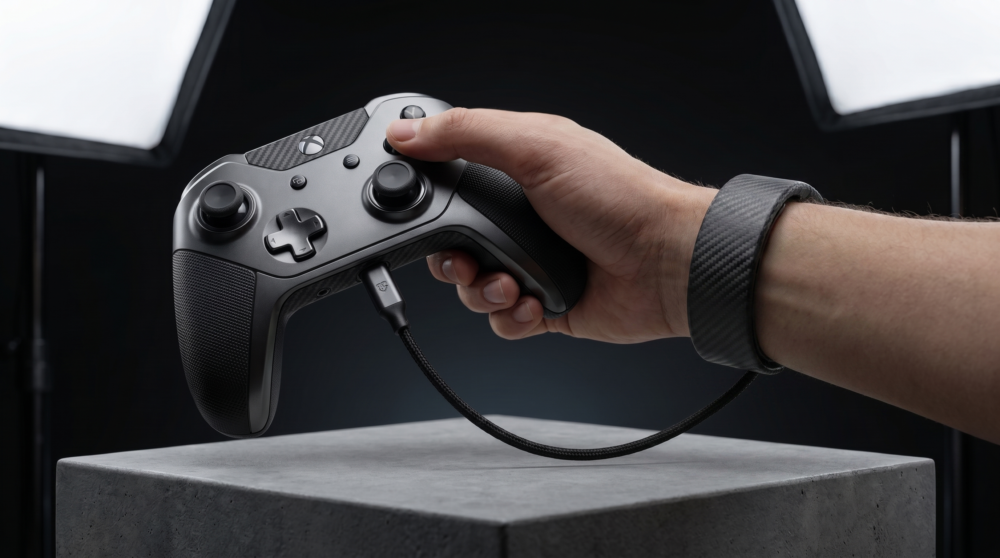
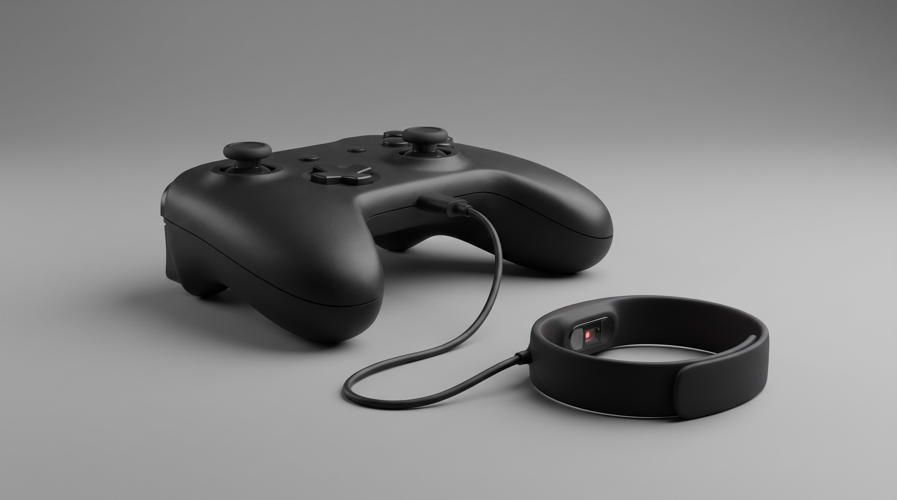

Pulse Adaptive Gaming
A middleware game engine plugin that reads wearable biometrics to modulate NPC aggressiveness and ambient flow states in real-time.
Observation & Context
Difficulty settings in modern video games are static (Easy, Normal, Hard), yet the player's physical stress, fatigue, and flow states are highly dynamic. A difficulty level selected when alert can feel frustrating when tired, breaking player immersion.
Generative Research
While smartwatches and fitness bands track live Heart Rate (HR) and Heart Rate Variability (HRV), these bio-metrics are siloed inside fitness apps. Payouts and triggers inside game loops remain disconnected from the player's actual autonomic nervous state.
The Concept
We propose a plugin that pipes raw smartwatch HR data directly into Unreal/Unity. If the player's heart rate spikes past a baseline, the system dials back enemy spawning or visual stress cues to maintain flow. Conversely, if a player is bored (low heart rate), it ramps up complexity.
Viability Scorecard
| Dimension | Evaluation |
|---|---|
| Confidence Score | 82/100 |
| Technical Feasibility | High (Local Bluetooth socket connection) |
| Market Potential | High (Indie developers looking for design hooks) |
Hardware Concept Renders

Desktop prototype showing the custom controller wired to the biometric tracking wristband.

Playtesting session demonstrating live heart rate feedback integration via the carbon-weave biometric band.
Biometric Flow Simulator
Balanced gameplay. Standard spawn rates active.